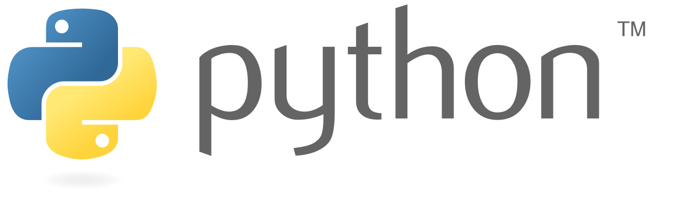

Python é uma linguagem de programação de alto nível, interpretada, interativa e orientada a objetos. Mas, pelos céus! O que vem a ser um objeto!? Em python, um objeto é como uma "caixa" que guarda informações e que sabe fazer coisas. Ora vejamos, um carro é um objeto no mundo real. E ele tem características tais como cor, modelo, ano e também pode fazer ação como andar de frente, andar de ré, buzinar, frear, etc. Em python funciona igual: um objeto tem características (que chamamos atributos) e ações (que chamamos de métodos). Viu só. Muito simples, não é?
Devido à sua simplicidade e versatilidade, o Python tem se tornado uma das linguagens mais populares para a programação científica, análise de dados e aprendizado de máquina e inteligência artificial. Existem muitos pacotes disponíveis para diversas aplicações. E devido a grande comunidade de pessoas que trabalham usando essa linguagem, no mundo, sempre há uma grande quantidade de recursos e suporte disponíveis. Certamente você será uma outra pessoa depois deste minicurso.
Neste minicurso, você entenderá os princípios básicos da lógica de programação, as boas práticas envolvidas na programação científica e, claro a sintaxe python. E até o final do curso você terá criado o seu primeiro programa computacional do absoluto zero.
Nenhum pré-requisito formal. Mas caso você opte por fazer este minicurso, é recomendável ter um computador pessoal para as práticas computacionais e para o projeto final de minicurso.
Ao final o aluno será capaz de definir e caracterizar variáveis tipo, escrever funções, compilar programas e fazer e editar gráficos e contar as histórias referentes ao dado.
instalando e configurando o python na sua máquinadefinindo variáries e variáveis tipo, imprimir uma variável e várias variáveisMultiIndex)Prof. Dr. Victor Ribeiro Carreira
Possui doutorado em Geofísica pelo Observatório Nacional (2021). Atualmente é professor Adjunto da Universidade Federal do Acre (UFAC), lotado no Centro de Ciências Biológicas e da Natureza (CCBN). Tem experiência na área de Geofísica Aplicada, com ênfase nos métodos eletromagnéticos e potenciais, atuando também nos seguintes temas: sismologia e análise de atributos sísmicos, programação científica em Python e modelagem numérica.
Carga Horária: 10h.
Horário: 14h - 16h. Diariamente.
Entre os dias 23 e 27 de março de 2026 (DATA A CONFIRMAR)
Feito Remotamente através do Google Classroom. O Link para Inscrição será disponível em breve: https://classroom.google.com/c/aaaaaaaaaaaaaaaaaaaaaaa
Serão emitidos certificados de participação para os alunos que cumprirem no mínimo 75% da carga horária total do curso.
Serão emitidos certificados de aproveitamento para os alunos que cumprirem no mínimo 75% da carga horária total do curso e que obtiverem nota igual ou superior a 6,0 (seis) na avaliação final do curso.